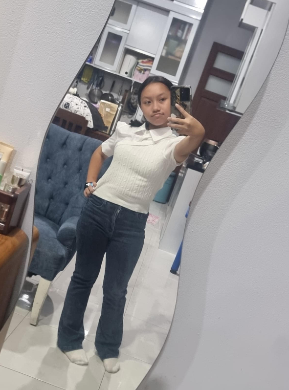

Profil Penjelajah!! <33
Halo hai semuanya! Perkenalkan, nama saya Euginia Larasati Narendra Kusuma, akrab dipanggil Laras atau ras! saya merupakan siswi kelas IX-2. Sejak kecil, saya sangat menyukai serial animasi edukasi Wild Kratts karena petualangan seru Chris dan Martin Kratt selalu mengajarkan betapa menakjubkannya keanekaragaman satwa liar serta bagaimana setiap makhluk hidup saling terhubung dalam satu ekosistem. Rasa cinta saya terhadap serial tersebut menginspirasi saya untuk merancang website bertema Wild Kratts ini, karena saya percaya bahwa menjaga kesehatan kita sebagai manusia tidak bisa dipisahkan dari upaya melindungi kelestarian laut dan daratan tempat para satwa tinggal.

Euginia Larasati Narendra Kusuma
Kelas: IX-2
Sekolah: SMP Santa Ursula Jakarta
Refleksi: Dari tugas membuat website kolaborasi ini, saya belajar banyak hal mengenai betapa pentingnya Sustainable Development Goals (SDGs) sebagai peta jalan global agar setiap negara memiliki arah yang jelas dalam mengatasi berbagai persoalan dunia, mulai dari krisis kesehatan (SDG 3) hingga pencemaran laut (SDG 14) dan kerusakan hutan (SDG 15). Saya juga menyadari bahwa mewujudkan pembangunan berkelanjutan bukanlah tanggung jawab pemerintah semata, melainkan membutuhkan partisipasi aktif kita sehari-hari, seperti mengurangi sampah plastik sekali pakai dengan membawa tumbler dan kotak makan sendiri, memilah sampah, serta menjaga pola hidup sehat. Karena kesehatan manusia tidak akan terwujud apabila alam tempatnya berpijak rusak. Selain itu, pengetahuan saya juga semakin luas mengenai bagaimana Indonesia berperan aktif dalam kerja sama bilateral, regional, dan multilateral untuk menjaga ketahanan kesehatan dunia.
Selama proses pengerjaan proyek ini, saya berusaha menerapkan nilai-nilai Serviam, khususnya Totalitas serta Cinta dan Belas Kasih. Nilai Totalitas saya wujudkan dengan mengerjakan setiap bagian website secara sungguh-sungguh, teliti dalam mengolah informasi dari sumber tepercaya, serta merancang desain bertema Wild Kratts agar materi tersampaikan dengan jelas dan menarik. Sementara itu, nilai Cinta dan Belas Kasih tumbuh ketika saya semakin peka terhadap kondisi kesehatan masyarakat dan kelestarian makhluk hidup di alam, sehingga mendorong saya untuk ikut berkontribusi melalui langkah-langkah kecil. Nilai-nilai Serviam tersebut sangat selaras dengan Pancasila Sila ke-2 (Kemanusiaan yang Adil dan Beradab) dan Sila ke-5 (Keadilan Sosial bagi Seluruh Rakyat Indonesia), karena melalui upaya menjaga kebersihan lingkungan dan mengedukasi perilaku hidup sehat, saya turut menghormati hak asasi setiap manusia untuk hidup sehat serta merawat ciptaan Tuhan secara adil bagi generasi mendatang.
Tujuan Pembuatan Website?! :O
Website ini disusun sebagai proyek kolaborasi terpadu antara mata pelajaran IPS, PPKN, dan TIK! dengan tujuan utama untuk mengedukasi teman-teman sebaya dan pengunjung mengenai pentingnya SDG 3 (Kehidupan Sehat dan Sejahtera) serta hubungannya yang erat dengan SDG 14 (Ekosistem Lautan) dan SDG 15 (Ekosistem Daratan). Melalui informasi yang disajikan dengan konsep petualangan alam yang menarik, website ini juga bertujuan menunjukkan bukti nyata peran aktif Indonesia dalam kerja sama antarnegara yang berlandaskan nilai-nilai luhur Pancasila, sekaligus mengajak generasi muda untuk memulai aksi nyata sederhana di rumah dan sekolah demi menjaga kesehatan diri serta kelestarian bumi.